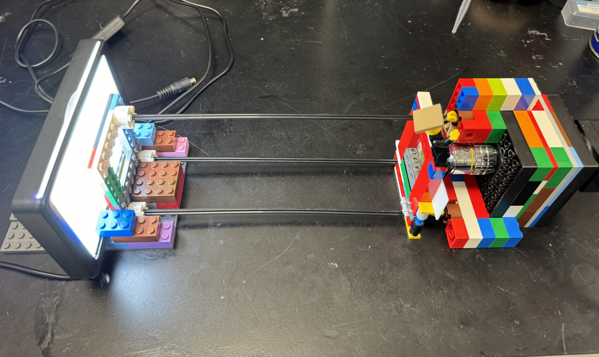
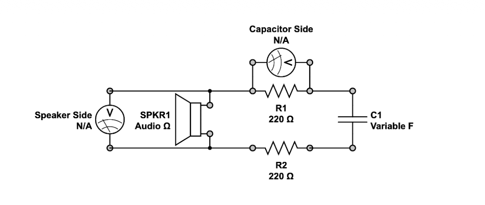
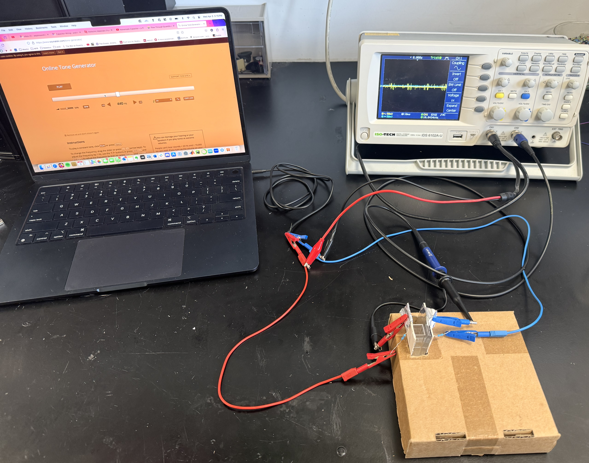
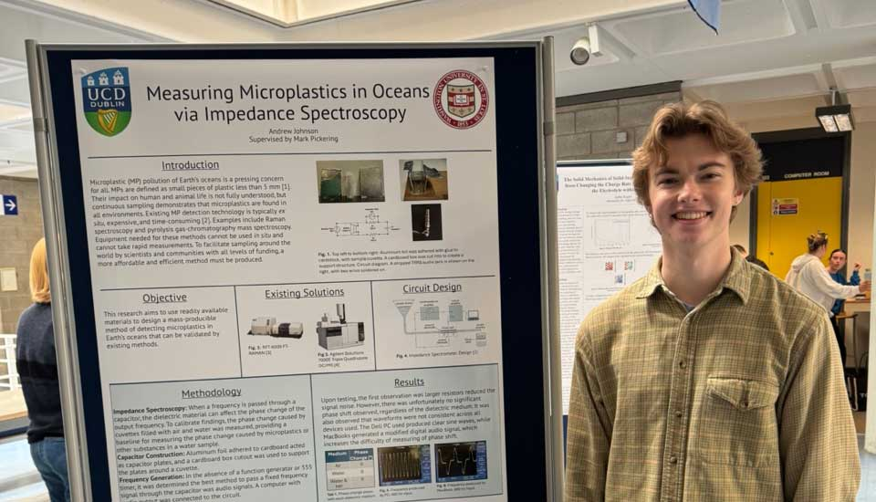

Low-Cost Spectrometer
During my junior year of undergrad at WashU, I had the opportunity to study at the University College of Dublin in the beautiful capital of Ireland. There, enrolled in several engineering and humanities courses, I elected to join a course that paired me with a lab group for a semester of research. I joined the Pickering Group, whose focus is primarily on neuro-biology and basic neuron development, as well as low-cost flexible lab tools, such as microscopes and spectrometers. My responsibility was to develop a low-cost impedance spectrometer to detect microplastics in ocean water samples. I made use of very cheap parts, such as aluminum foil, cardboard, simple wires, and a standard plastic cuvette. At the end of the semester, I had the chance to present my findings and work at a symposium alongside other students who enrolled in the course and worked with different labs.



